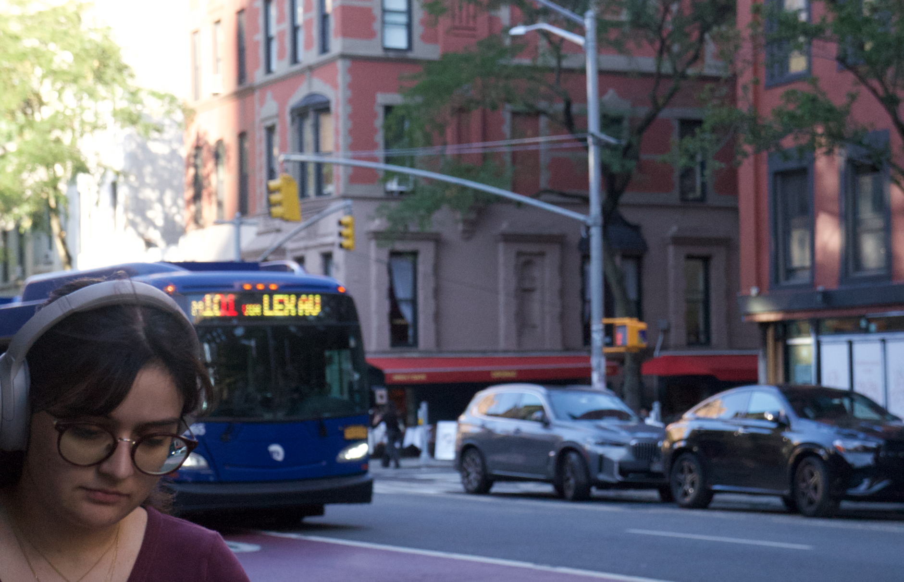

This is a picture of my friend Yonglin! I thought was it was very nice. I was struggling with the camera a bit so the picture is a bit blurry, but I think this works for Deep Depth of Field.

I was trying to take a picture of the bus when this lady happened to walk into the frame! I think the image is very nice however, and its perfect for Shallow Depth of field!
This is my Photoshopped Field Blur image that I did in Adobe Photoshop!